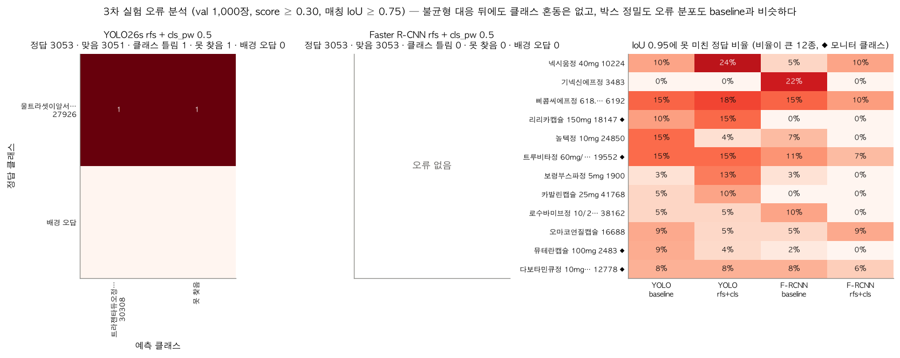

1 / 0
3차 실험
3차 실험 요약: 분류는 이미 포화라 불균형 대응이 닿을 곳이 없었습니다.
분류는 이미 포화
val 클래스 일치 99.9~100%, 희소·빈번 절반 AP 차이 ±0.002. 올릴 여지가 없습니다.
남은 오류는 박스 정밀도
IoU 0.95 미달은 YOLO 58 → 58, F-RCNN 37 → 27. 샘플링·가중치는 분류 손실에 작용합니다.
점수를 막는 곳은 다른 데
대회 test 정답 쪽일 가능성이 커서, 학습 분포를 바꿔도 닿지 않습니다.

남긴 것: 세 모델에 같은 목록으로 샘플링을 적용하는 코드 · 총 학습량 맞춤 기준 · 희소·빈번 AP 차이 지표 · seed 편차 0.020 실측값
← →/Space 이동 · N 노트 · Esc 목차